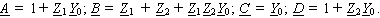
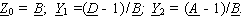
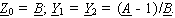

2.8.1.6. Схемы замещения неавтономных четырёхполюсников
|
|||||||||
| |
(2.133) |
Обратные соотношения:
Для симметричного ЧП 
- для П-образной схемы замещения (рис. 2.91, б):
|  |
(2.134) |
- для П-образной схемы замещения (рис. 2.91, б):
|  | (2.135) |
Обратные соотношения:
| |
(2.136) |
Для симметричного ЧП: 